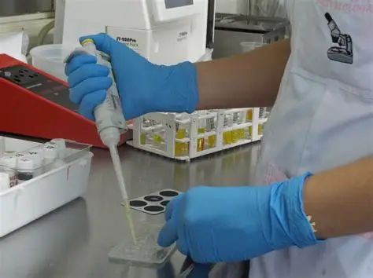
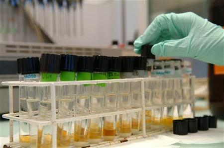

Los crímenes no siempre se cometen de forma violenta. A lo largo de la historia, el uso de sustancias químicas, drogas ilegales y venenos ha sido un método silencioso para cometer homicidios. La toxicología forense es la disciplina encargada de detectar estas sustancias ocultas.


Cuando se sospecha de intoxicación, se analizan muestras biológicas estratégicas durante la autopsia:
| Muestra | Utilidad |
|---|---|
| Sangre | Mide la concentración exacta al momento de la muerte. |
| Orina | Detecta metabolitos de sustancias procesadas horas antes. |
| Humor Vítreo | Líquido del ojo; ideal porque resiste bien la putrefacción. |
Con ayuda de equipos como la cromatografía de gases y la espectrometría de masas, los toxicólogos pueden identificar sustancias en cantidades tan ínfimas como una millonésima de gramo, cerrando la puerta a cualquier intento de ocultar un crimen por envenenamiento.